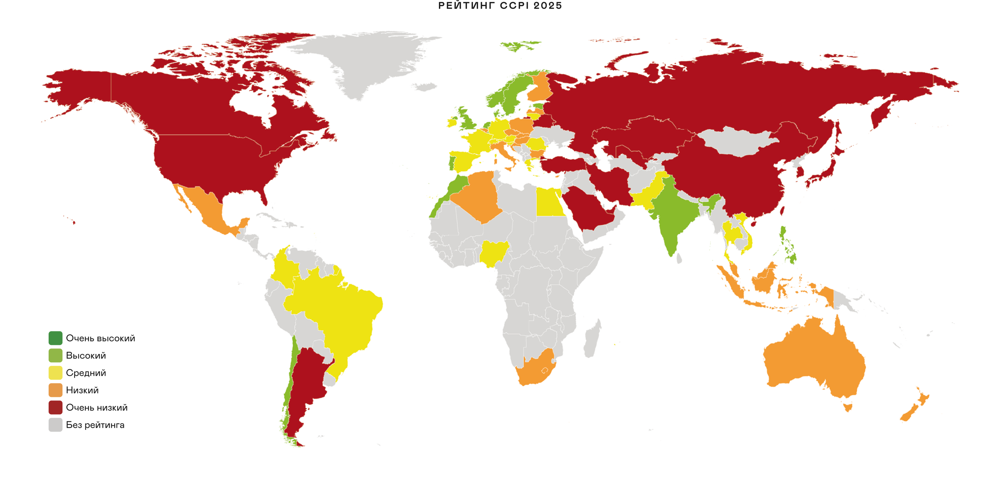

Международное климатическое сотрудничество
Проблема изменения климата стала слишком масштабной, чтобы её могли решить отдельные компании или страны. Чтобы найти совместное решение, страны создают международные соглашения и разрабатывают национальные стратегии по снижению выбросов.
В 1988 году Организация Объединённых Наций официально признала изменение климата одной из главных угроз для человечества. Чтобы разобраться в проблеме, ООН в том же году собрала лучших учёных со всего мира в Межправительственную группу экспертов по изменению климата (МГЭИК). Их задачей стал анализ научных данных, чтобы точно определить, как деятельность человека влияет на климат.
Первый доклад МГЭИК вышел в 1990 году. В нём учёные подтвердили: угроза изменения климата реальна, и она напрямую связана с деятельностью человека. В последующих докладах МГЭИК продолжала уточнять свои оценки, основываясь на самых свежих научных данных.

«Однозначно, что влияние человека привело к потеплению атмосферы, океана и суши» — Шестой отчёт МГЭИК
Рамочная конвенция ООН по изменению климата (РКИК ООН)
К началу 1990-х годов учёные пришли к выводу, что бороться с изменением климата нужно всем миром. В 1992 году страны договорились о сотрудничестве и приняли основной международный документ в этой области — Рамочную конвенцию ООН об изменении климата.
Главная цель конвенции — не допустить опасного влияния человека на климатическую систему, стабилизировав концентрацию парниковых газов в атмосфере. В основе документа лежит принцип «общей, но дифференцированной ответственности»: хотя ответственность за климат лежит на всех, развитые страны должны брать на себя ведущую роль и помогать развивающимся странам финансово и технологически.

Три столпа РКИК ООН
Высший орган конвенции — Конференция Сторон (КС), которая собирается ежегодно. Ей помогают два вспомогательных органа:
ВОКНТА
Отвечает за научные и технические рекомендации.
ВОО
Оценивает, как страны выполняют свои обязательства.
Секретариат
Находится в Бонне в Германии. Обеспечивает работу органов конвенции.
Для оценки своей работы все страны-участницы подают стандартизированные отчёты — «определяемые на национальном уровне вклады» (ОНУВ), в которых рассказывают о своих выбросах и мерах по их снижению. Развитые страны обязаны отчитываться каждые четыре года, а развивающиеся стараются делать это так же часто.
Киотский протокол
Климатическая конвенция регулировала действия стран только до начала XXI века. Поэтому уже в 1995 году на первой конференции её участники решили разработать новый, более конкретный документ. После сложных переговоров в декабре 1997 года в японском городе Киото они приняли Киотский протокол.
Протокол впервые установил конкретные объёмы и сроки сокращения выбросов, а для их достижения предложил рыночные механизмы — торговлю квотами. Он требовал от стран действовать в первую очередь на национальном уровне, но в помощь им дал три гибких инструмента:
Идея этих механизмов проста: снижать выбросы там, где это дешевле всего, например, в развивающихся странах. Это также стимулировало «зелёные» инвестиции и помогало бизнесу переходить с устаревших, «грязных» технологий на чистые.
Парижское соглашение
Киотский протокол показал ограниченную эффективность, так как не все крупнейшие мировые загрязнители, включая США, его ратифицировали, а Канада вышла из соглашения. Тем не менее, он создал важный прецедент: впервые установил юридически обязательные цели по выбросам и заложил основу для рыночных механизмов, подготовив почву для нового, более амбициозного договора.
В 2012 году было принято решение начать переговоры по новому глобальному климатическому соглашению. Результатом этих переговоров стало Парижское соглашение, принятое в 2015 году.
Главная цель соглашения — удержать рост глобальной средней температуры «намного ниже» 2°C сверх доиндустриальных уровней и приложить все усилия, чтобы ограничить его 1,5°C.
Для этого каждая страна самостоятельно определяет и представляет свои долгосрочные цели по снижению выбросов до 2030 года — так называемые «определяемые на национальном уровне вклады» (ОНУВ). Кроме того, страны должны разрабатывать долгосрочные стратегии низкоуглеродного развития и планы по адаптации к уже неизбежным последствиям изменения климата.

ЕС, США, Япония, Норвегия
Китай, Россия, Бразилия, ЮАР
Индия, Индонезия, Кыргызстан, Таджикистан
17 целей ООН в области устойчивого развития
Борьба с изменением климата — это часть более широкой глобальной задачи по достижению устойчивого развития. Эта концепция основана на трёх компонентах — экономическом росте, социальном благополучии и экологической безопасности — и проблема изменения климата напрямую влияет на каждый из них.
В сентябре 2015 года на Генеральной Ассамблее ООН 193 страны приняли «Повестку дня в области устойчивого развития до 2030 года». Её ядром стали 17 Целей в области устойчивого развития (ЦУР), которые призваны направить действия всех стран и стимулировать международное сотрудничество в самых важных для человечества и планеты сферах.

Хотя борьбе с изменением климата посвящена отдельная Цель 13, на самом деле эта проблема пронизывает все 17 целей. Изменение климата напрямую угрожает борьбе с голодом, доступу к чистой воде, здравоохранению и экономическому росту. Поэтому сегодня очевидно: достичь большинства Целей устойчивого развития невозможно, если не принять решительных мер по борьбе с изменением климата.
НКО, общественные движения и активизм
Помимо государств, в борьбе с изменением климата ключевую роль играют неправительственные организации (НКО), общественные движения и активисты. Они формируют общественное мнение, привлекают внимание к климатическим проблемам и добиваются реальных действий от правительств и корпораций.

Лучшие мировые практики климатического регулирования
Чтобы эффективно регулировать выбросы, страны используют несколько ключевых подходов.
 Создание углеродных рынков
Создание углеродных рынков
Системы торговли квотами и углеродными единицами
 Налоговые льготы и субсидии
Налоговые льготы и субсидии
Для компаний, которые внедряют «зелёные» технологии
 Национальные стратегии низкоуглеродного развития
Национальные стратегии низкоуглеродного развития
 Зелёное финансирование
Зелёное финансирование
 Трансграничные механизмы
Трансграничные механизмы
Учитывают углеродный след импортируемых товаров
 Международное сотрудничество
Международное сотрудничество
Для обмена опытом
Как измеряют успехи стран?
Чтобы оценить, насколько эффективно страны борются с изменением климата, был создан Индекс эффективности в области изменения климата (CCPI). Он анализирует 57 стран и Европейский Союз, на которые в совокупности приходится более 90% мировых выбросов парниковых газов.
Индекс рассчитывается на основе 14 критериев в четырёх категориях: выбросы парниковых газов (вес 40%), возобновляемая энергия (вес 20%), потребление энергии (вес 20%), климатическая политика (вес 20%).
Главный вывод последнего рейтинга CCPI: ни одна страна не получила оценку «очень высокая». Никто в полной мере не выполняет требования Парижского соглашения — удержать глобальное потепление на уровне ниже 2°C. Поэтому первые три места в рейтинге традиционно остаются пустыми.

Государственная политика и климатическое регулирование в России
Чтобы участвовать в международном климатическом сотрудничестве, у каждой страны должна быть собственная внутренняя политика. В России этот подход основан на двух ключевых направлениях: регулировании выбросов и адаптации к последствиям изменения климата.
Регулирование выбросов
Основа российской климатической политики — это участие в международных соглашениях. Россия присоединилась к Рамочной конвенции ООН, ратифицировала Киотский протокол в 2004 году, а в 2019 году — Парижское соглашение, подтвердив свои обязательства по снижению выбросов.
Эти основные документы дополняются другими законами (например, ФЗ «Об охране окружающей среды») и подзаконными актами, которые конкретизируют механизмы климатической политики. За государственную политику и нормативное регулирование в области ограничения выбросов парниковых газов в России отвечает Министерство экономического развития.
Адаптация к последствиям изменения климата
Помимо снижения выбросов, Россия активно готовится к тем изменениям климата, которые уже неизбежны. Эта работа ведётся поэтапно в рамках национальных планов адаптации. Основой для неё стала утверждённая в 2019 году Национальная адаптационная стратегия, которая направлена на защиту населения, инфраструктуры и экосистем.
Климатическая доктрина Российской Федерации определяет упреждающую адаптацию как один из приоритетов и указывает, что все меры должны приниматься с учётом международных договорённостей. Стратегия пространственного развития до 2030 года указывает на необходимость снижать уязвимость к негативным последствиям изменения климата и использовать его возможные позитивные эффекты.

Какие риски стоит учитывать в адаптационных планах: ветер, осадки, пожары, жара, засуха.

Сахалинский эксперимент
Ключевым шагом к созданию национального углеродного рынка в России стал Сахалинский эксперимент. Этот пилотный проект, запущенный в 2021 году, работает по простому принципу: компании в регионе получают квоты на выбросы парниковых газов. Если компания смогла снизить свои выбросы и у неё остался излишек квот, она может продать его другим участникам. Это создаёт прямой финансовый стимул для бизнеса внедрять экологически чистые технологии.
Запуск эксперимента. Базовый уровень: выбросы превышают поглощение на ~10%.
1,367 млн т CO₂-экв.
Сокращение почти вдвое за 2 года (−46% от базового уровня).
0,732 млн т CO₂-экв.
Цель достигнута досрочно — в апреле 2025 года: выбросы сравнялись с поглощением.
0,000 млн т CO₂-экв.
Эксперимент продолжается, итоги будут подведены в конце года.
Международные соглашения и национальные стратегии — это основа для борьбы с изменением климата. Но они не будут работать без участия каждого из нас.